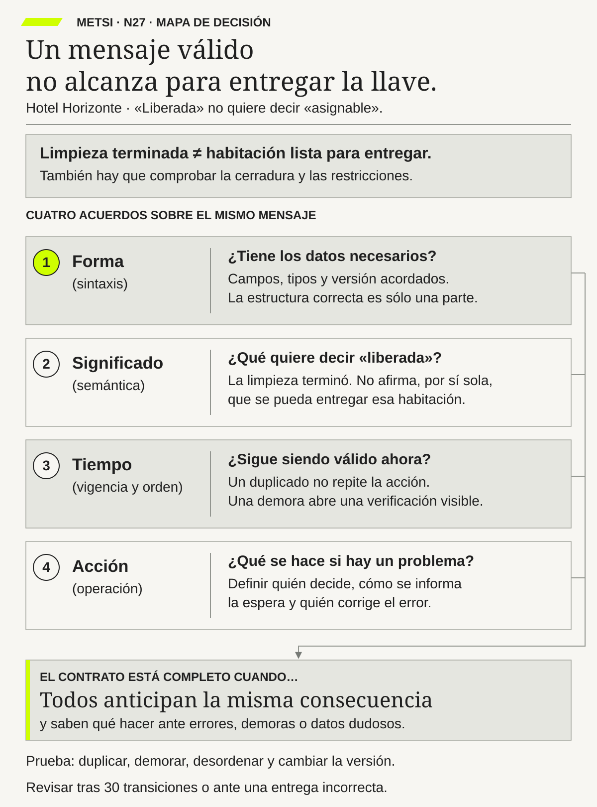

Fernando Flores
Understanding Computers and Cognition: A New Foundation for DesignAblex · 1986
Permite reconocer compromisos y condiciones de cumplimiento que una respuesta técnica no define por sí sola.

APIs y contratos de intercambio: significado, tiempo y operación
Integrar exige compartir o traducir significado, vigencia, efecto y manejo de la indeterminación.
Entender lo mismo antes de conectar
Ruta priorizada: 1 h 20 min a 1 h 40 min. Núcleo de lectura: 60 a 75 min; preparación: 20 a 25 min. Las extensiones agregan 30 a 45 min y profundizan el recorrido.

Nota. SIN NUM. identifica aparatos de orientación y referencia.
Seis referentes y las obras principales utilizadas para construir N27.
Permite reconocer compromisos y condiciones de cumplimiento que una respuesta técnica no define por sí sola.

Ayuda a precisar conceptos y mecanismos para distinguir una explicación de una etiqueta sobre la tecnología.

Aporta fundamentos sobre restricciones y semántica de interacción en sistemas distribuidos, más allá del formato del mensaje.

Permite relacionar diseño de aplicaciones, transacciones y evolución con los efectos que necesita controlar la operación.

Ayuda a definir fronteras que ocultan decisiones internas sin esconder condiciones relevantes para sus consumidores.

Aporta bases para razonar sobre orden causal cuando distintos participantes no comparten un reloj perfecto.
N27 no resume estas fuentes ni las convierte en receta. Las pone en tensión para construir juicio profesional.
¿Qué necesitan acordar dos partes para que un mensaje correcto no termine produciendo una decisión equivocada?

Un contrato debe probarse sobre su consecuencia operacional y conservar quién puede detener y reparar.
Imaginá una universidad ficticia. Una estudiante solicita una vacante y el portal muestra «inscripción confirmada». Guarda el comprobante. Dos días después intenta entrar al campus y descubre que no figura en la nómina. Para ella, la inscripción estaba hecha. Para el sistema académico, todavía faltaba validar documentación.
El equipo revisa el intercambio. El mensaje llegó, tenía los campos esperados y recibió una respuesta técnica favorable. No había una letra mal escrita ni un número fuera de lugar. El problema era otro: Admisiones usaba «confirmada» para decir que una vacante estaba reservada; el sistema académico lo usaba para una inscripción definitiva.
También había una condición de tiempo. La reserva de vacante tenía una vigencia, pero el portal no la explicaba. Cuando se venció, la estudiante siguió viendo una promesa que ya no coincidía con el estado del sistema. El caso requiere revisar la atención y las reglas de esa institución; la tecnología no puede decidir por sí sola qué derecho conserva la estudiante.
Una tercera dificultad aparece al investigar. La solicitud se envió dos veces después de una respuesta perdida, cada vez con un identificador nuevo. El receptor no pudo reconocer fácilmente que era el mismo intento. Y el aviso inicial indicaba que se había recibido el pedido, no que hubiera terminado su evaluación.
La solución no es cambiar una palabra y dar por terminado el problema. Hace falta acordar qué se envía, qué significa, cuánto tiempo vale y qué sucede si no puede completarse. También quién atiende a la persona cuando la promesa comunicada fue incorrecta.
El equipo separa estados: solicitud recibida, vacante reservada, documentación validada, inscripción confirmada y rechazo con una razón. No es una lista universal para universidades; es una propuesta del ejercicio. Lo importante es que cada estado indique una condición distinta y no prometa el paso siguiente antes de tiempo.
La institución revisa el episodio y define una reparación autorizada. El sistema conserva qué mensaje vio la estudiante y qué regla se aplicó. No reescribe el historial como si la pantalla nunca hubiera dicho «confirmada». Después se prueban respuestas perdidas, mensajes repetidos y vencimientos para que el mismo malentendido no reaparezca.
La idea central es directa: que dos sistemas puedan intercambiar datos no significa que estén de acuerdo sobre sus consecuencias. Ese acuerdo necesita un contrato más amplio que la forma del mensaje.
HH-23 había creado una vista provisoria para reunir comprobaciones de una llegada. HH-26 mostró las áreas y proveedores de los que depende. HH-27 retoma una pregunta pendiente: ¿qué afirma cada estado y qué decisión permite tomar?

Mariela muestra que Housekeeping usa «liberada» cuando terminó la limpieza. Lucía necesita más para entregar: una asignación compatible, condiciones materiales vigentes, un acceso operativo y ausencia de bloqueos que impidan el uso. Además debe comprobar las condiciones concretas que necesita la persona. Acceso y accesibilidad no son sinónimos.
Federico encuentra mensajes válidos desde el punto de vista técnico. La misma palabra circula sin error, pero los consumidores sacan conclusiones distintas. El equipo decide conservar «liberada» para la limpieza y definir «asignable» como una condición compuesta para una decisión de ingreso determinada. No obliga a Housekeeping a llamar de otra manera a su trabajo ni trata ambos estados como equivalentes.
La nueva condición no significa «cualquier persona puede usar esta habitación» ni «se garantiza disponibilidad futura». Tiene que relacionar reserva, habitación, requisitos y momento. Tampoco significa que el huésped ya ingresó. Esas son afirmaciones diferentes.
Para comprobar el acuerdo, el equipo revisa tres episodios: uno con un mensaje repetido, otro que llegó diecisiete minutos tarde y otro que conservaba una condición anterior después de una reasignación. Los tres pueden superar una validación de formato y, aun así, causar problemas.
El mensaje tardío requiere especial cuidado. Una habitación que estaba limpia antes pudo quedar bloqueada después. Recibir ahora el aviso viejo no autoriza a restaurar automáticamente una disponibilidad anterior. Se conserva como evidencia histórica y se revisa la situación actual.
Ricardo plantea qué necesita el turno: distinguir un rechazo de una demora y de un resultado desconocido. Si se agotó la espera de una respuesta, Lucía no puede deducir que la operación no ocurrió. Tampoco que ocurrió bien. Debe tener una acción segura: consultar, verificar por una vía autorizada, escalar o detener, según el caso.
Camila revisa la comunicación comercial. Si la web sigue ofreciendo disponibilidad inmediata cuando falta una comprobación, el nuevo contrato técnico no alcanza. Las palabras dirigidas al huésped deben expresar el mismo alcance que el servicio puede sostener.
El equipo prepara una convivencia controlada con consumidores antiguos. No traduce «limpia» como «asignable» para evitar cambiar una pantalla. Sólo admite traducciones que conserven el significado del uso concreto. Donde eso no es posible, limita la función o migra al consumidor.
Las primeras treinta transiciones sirven como ventana inicial de revisión, no como prueba suficiente para retirar automáticamente la versión anterior. Una entrega incorrecta o una pérdida de una condición protectora exige actuar antes. El cierre necesita evidencia de consumidores, pruebas y operación, no sólo completar el contador.
Este contrato mejora lo que las partes prometen y lo que pueden comprobar. No demuestra que todas las condiciones relevantes estén perfectamente modeladas o implementadas. N28 revisará precisamente esa diferencia entre cumplir un acuerdo y ofrecer calidad suficiente para personas y escenarios concretos.
Un contrato de intercambio debe permitir que las partes anticipen qué ocurrirá. Para eso necesita cuatro dimensiones: forma, significado, tiempo y respuesta operativa. Si falta una, un mensaje puede ser válido y producir una promesa falsa.
Pensemos en un pedido a una panadería. Escribir «dos docenas para mañana» parece claro. Pero falta saber de qué producto, para qué hora y si la respuesta «recibido» significa que el pedido fue aceptado. Si se cancela, también necesitamos saber cómo se avisa y qué ocurre con un pago realizado. La frase no coordina por sí sola todo ese trabajo.
En un sistema digital sucede algo parecido, con más velocidad y posibilidades de repetición. Un dato tiene un formato, pero además representa una afirmación. Esa afirmación puede vencer o ser corregida. Y una respuesta puede confirmar recepción sin confirmar el resultado que la persona espera.
Formalizar el contrato ayuda a descubrir diferencias antes de que afecten a alguien. No se trata de escribir un documento enorme. Se trata de acordar lo necesario y convertir las garantías importantes en ejemplos y pruebas. Si una regla dice que un reintento no duplicará una reserva, debemos comprobar el estado final, no sólo que apareció una respuesta favorable.
El contrato también declara incertidumbres y límites. A veces no se sabe si una operación ocurrió porque se perdió la respuesta. Ocultar esa situación bajo «error» obliga al consumidor a adivinar. Nombrarla permite consultar o reconciliar sin repetir a ciegas un efecto.
Por último, el acuerdo cambia con el sistema. Una nueva versión puede conservar el formato y alterar lo que una palabra permite hacer. Por eso se revisa con quienes producen, consumen y operan. La compatibilidad técnica no elimina la necesidad de coordinar consecuencias.

Lo esencial es acordar forma, significado, tiempo y respuesta operativa de un intercambio. Resolvé primero mensaje normal, repetido y tardío. Versiones de especificaciones, pruebas avanzadas y procedencia amplían la implementación. N16 ya acordó qué significa «asignable»; acá formalizamos cómo preservarlo cuando los sistemas intercambian y cambian datos.
N26 localizó participantes, dependencias y responsables. N27 toma una flecha del mapa y pregunta qué pasa por ella y qué obliga a hacer. No alcanza con dibujar «Housekeeping → PMS» si no sabemos qué significa el estado recibido.
Aquí contrato significa un acuerdo verificable de comportamiento entre partes. Puede relacionarse con obligaciones comerciales o jurídicas, pero no es sinónimo de contrato de compra ni reemplaza su análisis. Describe qué información y acciones se esperan, bajo qué condiciones y con qué respuesta ante problemas.
N28 preguntará si esas garantías alcanzan para el riesgo y la población. Un contrato puede estar bien especificado y contener una regla inadecuada. También puede ser correcto y estar mal implementado. Distinguir esas posibilidades permite corregir lo que corresponde.
RFC 9110 define la semántica de HTTP. OpenAPI y JSON Schema permiten describir interfaces y estructuras; AsyncAPI describe interacciones basadas en mensajes. Son recursos para volver examinable parte del acuerdo, no pruebas automáticas de que el servicio satisface una necesidad.
Evans ayuda a discutir lenguaje y fronteras de dominio. Una misma palabra puede tener un sentido legítimo en un área y otro en otra. La solución puede ser una traducción explícita, no imponer un vocabulario único que borre diferencias útiles.
Kleppmann, Lamport, Vogels, Gray y Reuter permiten razonar sobre datos distribuidos, orden, consistencia y recuperación. Hohpe, Woolf y Fowler aportan patrones para diseñar intercambios y manejar sus efectos. Estas fuentes ayudan a formular garantías precisas, evitando prometer más de lo que la coordinación puede asegurar.
Parnas permite pensar qué decisiones internas conviene ocultar detrás de una interfaz. Ocultar implementación reduce dependencia; ocultar una condición que el consumidor necesita para actuar crea ambigüedad. Fielding ayuda a mirar restricciones y semántica de interacción, más allá de llamar REST a una API.
Pact aporta pruebas entre productores y consumidores. W3C PROV permite relacionar datos, transformaciones y responsables. NIST ayuda a definir criterios de acceso. Winograd y Flores permiten reconocer cómo una interacción puede crear compromisos que no se deducen del protocolo técnico.
Estas miradas se complementan. Un formato válido, una prueba exitosa y una autoridad identificada contestan preguntas distintas. Ninguna vuelve innecesarias a las otras.
Podemos comenzar con cuatro preguntas sencillas: ¿cómo viene escrito?, ¿qué afirma?, ¿hasta cuándo y en qué orden vale?, ¿qué hacemos con el resultado? Sus nombres técnicos son contrato sintáctico, semántico, temporal y operacional.
No hace falta aprender primero los nombres para entender el problema. La sintaxis distingue un número de una fecha; la semántica distingue una solicitud recibida de una reserva confirmada; el tiempo distingue un estado vigente de uno viejo; la operación distingue una alerta registrada de una persona que puede responder.
El contrato sintáctico define estructura, tipos y campos. Por ejemplo, una reserva puede necesitar un identificador, una fecha y un estado de una lista permitida. Si llega sin identificación, el receptor debe saber cómo tratarla, no inventar una.
Los detalles importan. Un identificador como «0017» puede no ser el número diecisiete: perder los ceros puede cambiar cómo se relaciona con otros registros. Una fecha de calendario no cumple el mismo propósito que una hora de evento con zona horaria. El contrato debe expresar la diferencia que la decisión necesita.
Tampoco campo ausente, valor nulo, cero y falso son sinónimos. «No recibimos información sobre una condición» no equivale a «la condición no existe». Completar automáticamente lo desconocido puede transformar un problema de datos en una decisión equivocada.
JSON Schema Draft 2020-12 permite expresar y validar restricciones estructurales. La validación concreta depende del esquema y del validador; ciertas indicaciones de formato no se comprueban como restricciones en cualquier configuración. Hay que ensayar qué acepta realmente el sistema. [JSON Schema](https://
El esquema se prueba con mensajes válidos y con casos que deben rechazarse o tratarse especialmente. También se contrasta con lo que la implementación efectivamente emite. Una descripción correcta no ayuda si una pasarela elimina un campo necesario durante el envío.
El límite es claro: que «liberada» sea un valor permitido no demuestra qué permite hacer. La forma correcta prepara la discusión del significado; no la resuelve.
El contrato semántico define el significado para un contexto de uso. En HH-27, «liberada» afirma limpieza terminada. No afirma por sí sola ausencia de una restricción posterior, funcionamiento de la cerradura o adecuación para cualquier necesidad.
Una buena definición permite clasificar casos. Si Mariela terminó limpieza pero detectó después un problema material, ¿el estado sigue habilitando el mismo uso? Si una reserva exige cierta condición que no está confirmada, ¿se puede asignar? Estas preguntas muestran más que una definición circular como «asignable significa que se puede asignar».
El contrato necesita ejemplos positivos, negativos y límites. Puede decir qué evidencia permite afirmar el estado, quién puede producirlo y qué cambio lo deja sin vigencia. También debe indicar qué conclusión no está autorizada.
Evans ayuda a conservar fronteras de significado. Housekeeping no tiene que afirmar decisiones que no le corresponden. El PMS puede combinar datos para otro propósito, pero debe hacer visible esa transformación. Un dato observado y una conclusión calculada no son la misma fuente.
Cuando aparece un caso nuevo, se revisa la regla. No se cambia silenciosamente el significado de registros antiguos. Para entender un incidente necesitamos saber qué quería decir el estado cuando cada parte actuó.
El contrato temporal explica vigencia, orden y tratamiento de demora. No se reduce a elegir cuánto esperar una respuesta. También define cuándo una afirmación deja de servir para una acción.
Supongamos, en un ejemplo didáctico, que limpieza termina a las 14.02, el mensaje llega al PMS a las 14.07 y se procesa a las 14.09. Son tres momentos: evento, recepción y procesamiento. Si sólo guardamos el último, desaparece parte de la demora que condicionó la decisión.
Ahora agreguemos un bloqueo de mantenimiento a las 14.05. Recibir después el aviso de limpieza no vuelve disponible la habitación. El aviso cuenta algo verdadero sobre un momento anterior; no invalida necesariamente el bloqueo posterior.
Los relojes también pueden diferir entre sistemas. Lamport permite razonar sobre relaciones causales sin suponer un reloj global perfecto. Según el caso, harán falta versiones, secuencias y vínculos con transiciones previas. Ordenar sólo por la hora de llegada puede confundir el orden de recepción con el orden relevante para decidir.
La vigencia depende del uso. Un dato de hace varias horas puede servir para un análisis histórico y no para emitir un acceso ahora. Si vence, se conserva para explicar el pasado, pero no se lo reutiliza automáticamente como autorización actual.
El contrato operacional relaciona efectos, errores y responsabilidades. Debe permitir que el turno sepa qué ocurrió o qué sigue sin saberse, qué primera acción puede tomar y cuándo necesita otra autoridad.
Tecnología puede localizar una falla y no tener autoridad para entregar una habitación. Recepción puede aplicar una contingencia y no poder corregir el dato del proveedor. Comercial puede tener que suspender una promesa mientras se resuelve. El acuerdo conecta esas acciones, no las reúne bajo «avisar al equipo».
Puede incluir compromisos de tiempo y soporte, pero no se agota en un SLA. Una respuesta dentro del plazo contractual puede llegar demasiado tarde para cierto episodio. Hay que examinar la consecuencia y la alternativa disponible.
La prueba se hace con herramientas, permisos y reemplazos reales o fielmente representados en un entorno controlado. Si la instrucción exige que Lucía modifique una tabla a la que no accede, el procedimiento no está listo. La solución no es culpar al turno por no ejecutar una instrucción imposible.
Una API es una interfaz mediante la cual programas pueden solicitar o intercambiar información y acciones sin conocer toda la implementación del otro. Se parece, hasta cierto punto, a un mostrador con operaciones disponibles. Saber pedir por ese mostrador no garantiza que cualquier solicitud deba aceptarse.
En el hotel conviene distinguir cuatro interacciones. Consultar disponibilidad pide información. Solicitar una reserva pide un cambio que puede rechazarse. Informar limpieza terminada comunica un hecho registrado. Autorizar una excepción crea una decisión que necesita atribuciones específicas. Llamarlas a todas «API de reservas» no elimina esas diferencias.
Una respuesta HTTP favorable significa éxito respecto de la operación definida por esa interacción. No autoriza a inventar un éxito de negocio más amplio. Si la operación sólo recibe una solicitud para procesarla después, la interfaz de usuario no debe mostrar «reserva definitiva» por ese solo hecho.
OpenAPI 3.2.0, edición citada de 2025, describe aspectos de APIs HTTP como operaciones, parámetros, respuestas y esquemas. AsyncAPI 3.1.0 describe interfaces basadas en mensajes. Estas descripciones pueden apoyar documentación y pruebas, pero hay que comprobar implementación y uso. No se presentan como garantía de que el dominio esté bien modelado. [OpenAPI](https://
La interfaz debería permitir saber qué se puede pedir, qué autoridad hace falta, qué efecto se promete y qué respuestas son posibles. Si hay un límite de frecuencia o una operación que continúa después de responder, debe ser comprensible para quien consume. No todo detalle interno importa, pero las condiciones que cambian la decisión sí.
Una clave de idempotencia permite reconocer reintentos de la misma intención para no multiplicar el efecto acordado. Un identificador de correlación permite relacionar mensajes y eventos de un recorrido. Una versión permite distinguir estados o acuerdos que cambiaron.
Pueden parecer simples códigos, pero contestan preguntas diferentes. ¿Es el mismo pedido repetido? ¿A qué recorrido pertenece este aviso? ¿Sobre qué estado se está intentando actuar? Usar una misma cadena para varias funciones sólo es válido si se conserva explícitamente cada relación necesaria.
En HH-27, una nueva clave en cada reintento impide reconocer la repetición. Un identificador de correlación no impide por sí solo un doble cobro. Un número de versión escrito en una página no protege una escritura concurrente. Los controles deben implementar la garantía, no sólo nombrarla.

Un contrato de intercambio debe permitir que las partes anticipen qué ocurrirá.
Una precondición es algo que debe cumplirse antes de aceptar una operación. Una poscondición describe lo que debe quedar cierto después si la operación se completó conforme a su contrato.


Para asignar una habitación, puede exigirse una reserva compatible, condiciones vigentes y autoridad. Después debe existir una asignación identificable y un registro de la decisión. Si el acceso o el aviso quedan pendientes, no se los declara completados para que todo entre bajo «éxito».
El problema aparece cuando otra operación cambia algo entre la lectura y la escritura. Dos puestos leen que una habitación está libre y ambos intentan asignarla. La comprobación inicial de cada uno puede ser correcta y el resultado conjunto, incorrecto.
Hace falta un control que relacione comprobación y cambio. Por ejemplo, una actualización condicionada a la versión esperada, ejecutada de forma protegida, puede rechazar una escritura basada en un estado anterior. El diseño concreto depende del sistema. Agregar un campo «versión» sin esa comprobación no resuelve la concurrencia.
Cuando un cambio no puede garantizarse como una sola operación entre todos los participantes, se declaran efectos parciales y recuperación. Pero reparar después no demuestra que se preservó una condición que debía impedir una doble asignación desde el principio. Prevención y compensación son garantías distintas.
Una invariante es una condición que debe mantenerse a través de las operaciones válidas del sistema. Por ejemplo, para un mismo intervalo de ocupación, no asignar una habitación de forma incompatible a dos reservas. El alcance temporal importa: la misma habitación puede alojar reservas sucesivas.
Otra condición puede exigir no perder requisitos de accesibilidad al reasignar. No basta con que siga existiendo una marca «accesible»: debe preservarse la condición que la persona necesita. Si la representación es insuficiente, la invariante escrita puede no proteger lo esperado. N28 examinará esa limitación.
El contrato indica cómo se controlan estas condiciones y qué se observa cuando algo falla. Las pruebas buscan secuencias que podrían romperlas: dos cambios simultáneos, un mensaje viejo o una corrección manual. Superar esas pruebas aporta evidencia, no demuestra matemáticamente que ninguna ejecución futura pueda fallar.
Si dos exigencias parecen incompatibles, el equipo revisa su formulación y escala a las autoridades competentes. No corresponde que una variable o una decisión improvisada dispense una obligación. Elena puede tomar decisiones dentro de su competencia, no eliminar por sí sola cualquier protección aplicable.
Las pruebas basadas en propiedades generan combinaciones de entradas y secuencias para buscar incumplimientos de una regla. Son útiles para explorar más casos de los que una persona escribiría a mano. Pero también pueden comprobar impecablemente una propiedad equivocada. Operaciones debe revisar qué consecuencia humana se está protegiendo.
Imaginá que pedís dos entradas por internet. El sitio deja de responder después de confirmar el pago. No sabés si la compra terminó. Si apretás otra vez y el sistema trata el intento como una compra nueva, podés terminar con cuatro entradas y dos cargos.
La idempotencia busca que repetir una misma operación no multiplique el efecto definido. No exige que todas las respuestas tengan exactamente el mismo texto ni que el reintento no consuma recursos. Exige precisar qué efecto se mantiene único y bajo qué condiciones.
En un diseño con clave de idempotencia, la misma intención conserva su identificación en los reintentos. El receptor relaciona esa clave con el resultado y controla intentos concurrentes. También define qué ocurre si la misma clave llega con un pedido distinto y durante cuánto tiempo conserva el registro.
Dos compras legítimas de dos entradas no deben confundirse con un reintento de la primera. Parecerse en los datos no las vuelve la misma intención. La identidad tiene que representar la relación correcta, no una comparación apresurada de nombres y fechas.
RFC 9110 define la idempotencia de métodos HTTP respecto de su efecto pretendido. Una operación de negocio puede requerir controles adicionales para ofrecer una garantía equivalente en su contexto. No se deduce la propiedad de un endpoint sólo porque su nombre sugiera seguridad. [RFC 9110](https://
Una asignación puede quedar única en el PMS y, sin embargo, generar dos mensajes a otro proveedor. Hay que seguir los efectos relevantes: cobro, aviso, autorización y reserva. El contrato no debe prometer unicidad de todo si sólo controla una parte.
La ventana también importa. Si se conserva la deduplicación durante un período, hay que definir qué hacer con un intento posterior. No se puede seguir suponiendo la misma protección cuando el registro necesario ya no existe. Puede hacer falta consultar y reconciliar antes de actuar.
Un efecto irreversible no vuelve imposible toda idempotencia. Puede evitarse repetirlo si se reconoce de manera confiable la misma intención. Lo que no se puede afirmar es que cualquier efecto externo quede protegido sin cooperación o evidencia suficiente del otro participante.
La compensación es otra acción que atiende una consecuencia, cuando existe una alternativa legítima. Un reintegro, por ejemplo, no significa que el cargo original nunca ocurrió. Puede tener tiempos y efectos propios. Conservar esa diferencia ayuda a explicar la experiencia de la persona y el historial del sistema.
Un timeout indica que una respuesta no llegó dentro del tiempo esperado. No demuestra por sí solo que la operación fue rechazada o que no se ejecutó. El receptor pudo realizarla y perderse la respuesta de vuelta.
En el hotel, si no llega confirmación de asignación, Lucía no debería crear otra sin saber qué ocurrió con la primera. Tampoco debe informar éxito porque «seguramente salió». El contrato necesita distinguir estados conocidos y desconocidos.
Un resultado indeterminado expresa precisamente que todavía no puede afirmarse el efecto. No es falta de prolijidad: es una representación honesta de la información disponible. Permite elegir una acción segura sin fabricar certeza.
Según el contrato, puede consultarse el estado o reintentarse de manera segura con la misma identidad y garantía vigente. No todo resultado incierto exige el mismo procedimiento, ni todo error transitorio admite cualquier reintento. La acción depende de si el efecto pudo ocurrir y de los controles disponibles.
Mientras se resuelve, el estado anterior puede conservarse como evidencia histórica. Eso no significa que siga autorizando una acción si perdió vigencia o aparece una contradicción. Hay que distinguir «último estado conocido» de «condición actual verificada».
Un contrato de error clasifica situaciones y las relaciona con respuestas. «Error» es demasiado amplio si obliga al consumidor a elegir a ciegas entre volver a intentar, corregir datos o detenerse.
Un rechazo por una regla conocida puede requerir modificar la solicitud o pedir revisión. Un conflicto de versión puede requerir consultar el estado actual. Una dependencia temporalmente indisponible puede admitir espera. Un resultado indeterminado exige tratar la posibilidad de que el efecto ya haya ocurrido.
Estas categorías no se deducen siempre de un código numérico. El contrato debe explicar qué sabe el productor y qué puede hacer el consumidor. También qué información llega a la persona de operación.
Para Lucía, «no pudimos comprobar todavía la asignación» no significa lo mismo que «la reserva no existe». La segunda frase afirma algo más fuerte. Si la pantalla la muestra ante cualquier demora, puede inducir a rechazar una reserva válida.
El detalle debe ser suficiente y proporcional. La operación necesita una acción, no necesariamente una traza técnica completa. Los datos sensibles y los detalles internos se conservan protegidos para investigación; no se exponen en un mensaje para ganar claridad aparente.
La prueba incluye qué interpreta el turno. Un error correctamente clasificado en el servidor puede estar mal traducido en pantalla. El contrato falla en su propósito si termina provocando la acción que buscaba evitar.
La evolución compatible permite modificar una interfaz conservando los comportamientos que ciertos consumidores necesitan. No significa que nada pueda cambiar, ni que agregar un campo sea siempre inocuo.
Un consumidor puede rechazar campos desconocidos. Otro puede asumir que un estado sólo tiene tres valores. Agregar un cuarto puede ser una ampliación del esquema del productor y una ruptura para ese consumidor. Hay que comprobar usos reales.
Cambiar el significado es todavía más delicado. Si «liberada» pasa de limpieza terminada a una condición compuesta, una aplicación antigua podría tomar decisiones diferentes sin notar ningún cambio de formato. Por eso HH-27 separa nombres y reglas en lugar de modificar silenciosamente la palabra anterior.
Una migración necesita consumidores identificados, versiones observadas, aviso, soporte y condiciones de retiro. Puede requerir convivencia o un adaptador. El adaptador sólo es seguro si conserva el significado necesario; no puede inventar evidencia que la versión vieja no ofrece.
La fecha importa, pero no basta. Tampoco treinta transiciones favorables prueban que todos los consumidores relevantes migraron. Puede existir uno de uso poco frecuente que todavía dependa del contrato anterior. El cierre combina pruebas, observación y decisiones sobre casos pendientes.
Mantener versiones indefinidamente también tiene costo. Aumenta reglas, pruebas y posibilidades de confusión. La organización compara ese costo con el daño de retirar y prepara una salida. El productor no resuelve la coordinación simplemente publicando «versión nueva».
Git puede conservar el historial de una especificación. GitHub puede facilitar su revisión, discusión y pruebas. Eso ayuda a saber quién cambió una regla y qué versión se examinó.
Pero una versión publicada allí no demuestra qué está ejecutándose ni qué configuración usa el servicio. Hay que relacionar especificación, artefacto probado, configuración pertinente y versión desplegada. De lo contrario, la evidencia puede describir otra cosa.
Una revisión técnica tampoco otorga por sí sola autoridad institucional para ampliar una promesa. Si el cambio afecta lo que Recepción debe decidir, el acuerdo debe incluir ese uso. La herramienta conserva trazabilidad; no reemplaza la decisión.
Un contrato de datos acuerda significado, calidad, responsabilidad y límites de uso. No es sólo describir columnas. Tiene que explicar para qué decisiones sirve una observación y cuándo deja de ser adecuada.
Un registro de limpieza puede ser suficiente para analizar tiempos mensuales y no para decidir una entrega actual. Un dato puede ser exacto respecto del pasado y demasiado viejo para el presente. Calidad no significa lo mismo para todos los usos.
El contrato indica fuente, transformaciones, correcciones y responsabilidad. Si el PMS calcula «asignable», se debe poder distinguir la observación de Housekeeping de la regla que la combina con otros datos. Eso permite investigar dónde apareció una conclusión equivocada.
W3C PROV ofrece un modelo de procedencia que relaciona entidades, actividades y agentes. Puede apoyar esa trazabilidad sin definir por nosotros los estados del hotel. En este caso interesa saber qué dato se usó, qué transformación se hizo y quién intervino. [W3C PROV](https://
La corrección también tiene recorrido. Cambiar el dato original no garantiza que todos los consumidores hayan dejado de usar la versión anterior. Hay que decidir qué se notifica, qué copias importan y cómo comprobar la actualización.
Un nuevo uso puede requerir revisar el contrato. Que un dato esté disponible técnicamente no autoriza cualquier decisión con él. Los límites de propósito, acceso y conservación forman parte de ese análisis.
La autenticación comprueba una identidad según un mecanismo. La autorización define qué puede hacer esa identidad en cierto contexto. Un canal autenticado no debería poder ejecutar cualquier operación ni consultar todos los datos del huésped.
El contrato de seguridad establece operaciones, datos y permisos adecuados al propósito. Una consulta de disponibilidad agregada no requiere necesariamente notas personales sobre necesidades de accesibilidad. La información expuesta debe limitarse a lo necesario y protegerse según el caso.
Las pruebas incluyen identidades válidas que intentan acciones fuera de alcance. Así se detecta un permiso excesivo que no aparecería probando sólo una contraseña incorrecta. También se comprueba qué ocurre al retirar una autorización y con las operaciones ya iniciadas.
La contingencia merece la misma atención. Compartir una cuenta o exportar información innecesaria puede hacer que algo «funcione» a costa de perder control. Si se necesitan permisos excepcionales, deben estar autorizados, limitados y registrados, con el procedimiento de cierre correspondiente.
La evidencia de acceso ayuda a investigar, pero también puede contener información sensible. Se define qué registrar, quién lo ve y cuánto se conserva. Guardar todo sin límites no es sinónimo de trazabilidad responsable.
Una prueba de contrato verifica un acuerdo observable entre partes. Puede detectar que el productor devuelve un formato distinto o un resultado incompatible con lo que necesita un consumidor. Ayuda a localizar el problema antes de una prueba completa del servicio.
Pact documenta pruebas de contrato guiadas por expectativas de consumidores y verificación del proveedor. Su foco es la compatibilidad de interacciones; no reemplaza una evaluación integral de calidad ni determina si una regla de negocio es legítima. [Pact](https://
Una expectativa del consumidor puede estar equivocada. Si espera recibir todos los datos personales porque su implementación actual los usa, eso no convierte la necesidad en válida. Productor, consumidor y responsables del dominio deben revisar el propósito y las consecuencias.
Conviene distribuir las pruebas. Un esquema detecta ciertos errores de forma. Una prueba local comprueba una regla. Una prueba entre partes contrasta una interacción. Un escenario completo examina la cadena y la interpretación operativa. No hace falta llevar cualquier detalle a una prueba enorme, pero tampoco alcanza con probar sólo componentes.
Las dimensiones temporales y humanas suelen exigir pruebas adicionales a las de una herramienta de contratos. Una suite verde puede no incluir el cambio de turno, una respuesta tardía o la ausencia de la persona experta. Hay que mirar qué garantía cubre cada evidencia.
El resultado conserva versión, entorno y condiciones. «Pasaron las pruebas» es una afirmación incompleta si no sabemos cuáles, sobre qué implementación y para qué decisión de publicación o uso.
Ensayo: el mensaje M-21 informa «limpieza terminada» para H-12, ocurrió a las 13:42 y tiene versión 7.
Normal: se registra ese hecho y su tiempo; no se convierte solo en «asignable».
Repetido: vuelve M-21 con el mismo contenido; se reconoce sin duplicar el efecto protegido.
Tardío: después de recibir versión 8, llega otra copia de versión 7; se conserva como historia sin reemplazar el estado vigente por antigüedad de llegada. Reserva R-73 identifica el asunto, M-21 identifica el mensaje y una clave de intención identifica una operación: no cumplen la misma función.
Probá qué harías si M-21 reaparece con contenido distinto. Corresponde detectar el conflicto y resolverlo según el contrato, no aceptar ambos como repeticiones equivalentes.
El instrumento se completa alrededor del intercambio entre Housekeeping, PMS y sus consumidores. Son doce preguntas conectadas, no casilleros independientes.
1. ¿Qué decisión habilita? Permitir a Recepción evaluar una asignación para una reserva y un momento determinados. No convertir limpieza terminada en disponibilidad universal.
2. ¿Quién produce y quién consume? Housekeeping produce su observación de limpieza. El PMS deriva una condición compuesta. Recepción, cerraduras y canales consumen información según usos y permisos distintos. Se identifican responsables de corrección de cada parte.
3. ¿Qué forma tiene? Identificador de habitación, fuente, versión, tiempo y estado, con tipos y reglas de ausencia explícitos. Los ejemplos incluyen mensajes incompletos y valores no admitidos.
4. ¿Qué significa? «Liberada» conserva limpieza terminada. «Asignable» reúne condiciones declaradas para esa decisión. Deben estar claros los requisitos pertinentes y lo que el estado no afirma: ingreso ya realizado o garantía futura para otro canal.
5. ¿Cuándo vale? La condición se revisa ante cambios materiales, bloqueos o reasignaciones. Un mensaje atrasado no restaura por sí solo una condición anterior. El registro histórico se conserva sin tratarlo como permiso actual.
6. ¿Qué debe cumplirse antes? Reserva compatible, condiciones materiales y de acceso vigentes, restricciones pertinentes satisfechas y autoridad. El control de concurrencia debe impedir aceptar dos asignaciones incompatibles, no limitarse a leer disponibilidad una vez.
7. ¿Qué debe quedar después? Asignación identificable, versión, evidencia y estados reales de los efectos posteriores. Lo pendiente se muestra como pendiente; el aviso o la llave no se consideran emitidos si no hay evidencia de ello.
8. ¿Qué no puede romperse? No asignar de forma incompatible una habitación en el mismo intervalo y no perder condiciones protectoras en una reasignación. Se revisa si la representación y los controles realmente sostienen esas exigencias.
9. ¿Qué pasa ante repetición o error? La misma intención mantiene identidad, la garantía de deduplicación declara su alcance y los efectos externos se comprueban. Rechazo, conflicto, indisponibilidad e indeterminación tienen acciones diferentes.
10. ¿Qué permisos y datos hacen falta? Cada consumidor recibe lo necesario para su función. Una credencial válida no habilita cualquier corrección ni acceso a información personal.
11. ¿Cómo cambia el acuerdo? Se conocen consumidores antiguos y nuevos, traducciones posibles y condiciones de retiro. Las treinta transiciones iniciales aportan observación; no sustituyen la verificación de migración ni las respuestas para versiones pendientes.
12. ¿Quién atiende y repara? Lucía tiene una acción comprensible; Federico conserva información técnica protegida; Ricardo coordina la respuesta dentro de sus atribuciones. Se prueba el reemplazo de las personas habituales y se sigue la corrección hasta los consumidores relevantes.
La ficha no declara que el modelo será perfecto. Expone qué se exige y qué evidencia lo sostiene. Una diferencia encontrada en la práctica obliga a revisar si falló la implementación, el dato o la propia definición.
El equipo prepara datos de ensayo y un entorno controlado. No duplica reservas reales ni provoca una asignación incorrecta a huéspedes para comprobar la propiedad.
Primero envía un mensaje válido y observa el resultado esperado. Después omite un campo necesario y verifica que no se complete silenciosamente con un valor que cambie el significado.
Luego repite la misma intención, incluyendo dos intentos casi simultáneos. Comprueba el estado final y los efectos asociados, no sólo la respuesta del PMS. Una sola asignación con dos órdenes de acceso incompatibles no pasa inadvertida por revisar sólo una tabla.
En otra prueba retrasa diecisiete minutos un evento mientras ocurre una modificación posterior. El consumidor debe reconocer la diferencia entre información histórica y condición actual, conservar evidencia y evitar restaurar un estado inválido.
También se pierde una respuesta después de ejecutar una operación. El turno debe ver indeterminación y disponer de la ruta acordada. No se presenta un timeout como rechazo automático. Si el contrato permite reintento seguro, se comprueba la misma identidad y su ventana.
Finalmente conviven un consumidor antiguo y uno actualizado, y se ensaya la revocación de un permiso. Una persona de Recepción que no participó en la implementación interpreta cada resultado. La evidencia muestra qué puede hacer sin una llamada privada y qué necesita escalar.
El cierre relaciona descripción, implementación y operación. Una modificación semántica debe reflejarse en las pruebas, la pantalla y la conciliación. Si una parte conserva la regla anterior, la transición todavía no está cerrada.
Un laboratorio envía resultados a una historia clínica. Es un ejemplo conceptual de intercambio; las decisiones clínicas y sus protocolos corresponden a profesionales competentes. La lectura no define umbrales ni acciones de atención médica.
El mensaje puede tener un formato válido y seguir siendo ambiguo si «preliminar», «validado» y «corregido» aparecen igual para quien lo lee. Un profesional podría atribuir al dato una garantía que el laboratorio todavía no dio.
Una corrección posterior necesita conservar su relación con el resultado anterior. No se trata de mostrar información desactualizada como vigente, sino de poder reconstruir qué versión estuvo disponible y qué decisiones se tomaron con ella, conforme a las reglas aplicables de registro y protección.
El acuerdo también define cómo comunicar la corrección y quién atiende si no está el solicitante habitual. Que el sistema haya almacenado el mensaje no demuestra que la persona competente lo haya recibido o comprendido. La evidencia técnica y la comunicación operativa contestan preguntas diferentes.
Las pruebas pueden incluir un mensaje tardío, una corrección y una ausencia de destinatario en un entorno seguro. Se revisan significado, tiempo, destinatario y confirmación de la acción requerida. El método de análisis se transfiere; el riesgo y la respuesta no se copian desde el hotel.
Una organización publica su OpenAPI, genera clientes y declara resuelta la integración. Los ejemplos son correctos y todas las herramientas aceptan el formato. Pero una respuesta «aceptado» sigue interpretándose como resultado final en una pantalla y como pedido en proceso en otra.
La documentación puede describir con exactitud una ambigüedad que nadie discutió. Generar código a partir de ella puede multiplicar esa ambigüedad más rápido. El defecto no se corrige necesariamente agregando otro campo: hace falta decidir qué se afirma y quién puede sostenerlo.
Otro equipo intenta eliminar toda incertidumbre haciendo que cada llamada espere a todas las dependencias. Puede reducir algunos estados intermedios, pero aumentar acoplamiento y exposición a demoras. La sincronía no vuelve infalible la red ni elimina la posibilidad de perder una respuesta.
El diseño debe elegir qué garantías necesita cada decisión. Puede aceptar diferencias temporales para un informe y exigir un control más fuerte antes de asignar. «Todo sincrónico» y «todo eventual» son consignas insuficientes sin especificar consecuencias y límites.
Confundir formato con significado. Un mensaje válido puede afirmar menos de lo que su consumidor supone. Se prueba qué decisión permite tomar.
Nombrar estados sin definir cambios. Una lista no indica quién puede pasar de uno a otro, con qué condiciones ni qué ocurre después.
Usar la recepción como reloj de todo. Un mensaje recibido después puede describir un hecho anterior. La vigencia necesita contexto y orden relevante.
Tomar un timeout como rechazo. La operación pudo ocurrir. El contrato debe representar el resultado desconocido y la acción segura.
Reintentar con una identidad nueva. El receptor puede interpretar otro pedido legítimo. La garantía de repetición necesita una identidad y controles coherentes.
Prometer idempotencia sin revisar otros efectos. Una reserva única no demuestra un único cobro, aviso u orden externa. El alcance debe ser explícito.
Mostrar un error que afirma más de lo sabido. «Reserva inexistente» no equivale a «no pudimos consultar». La diferencia cambia cómo se atiende a la persona.
Versionar sin preparar consumidores. Cambiar un número no migra implementaciones, pantallas ni prácticas de operación.
Conservar un estado viejo como autorización actual. Puede explicar el pasado y haber dejado de ser válido para actuar ahora.
Probar sólo respuestas favorables. Demora, repetición, concurrencia, revocación y recuperación ponen a prueba garantías esenciales.
Dar por válida cualquier expectativa del consumidor. Una prueba ejecutable puede codificar una necesidad equivocada o un acceso excesivo. El propósito se revisa, no sólo el resultado verde.

El trabajo sobre interfaces incluye conversar con quienes toman decisiones usando sus mensajes. No se limita a publicar documentación. Requiere relacionar una expresión técnica con lo que la organización está dispuesta y autorizada a hacer.
La formalidad debe ser proporcional. Un intercambio exploratorio de bajo impacto puede comenzar con ejemplos sencillos. Una decisión sobre cobro, acceso o atención sensible necesita garantías y pruebas más exigentes. Sobredocumentar lo menor no compensa dejar implícito un contrato crítico.
La consistencia también se elige según el uso. Algunos datos pueden converger después sin daño relevante. Otros no deberían autorizar una acción irreversible mientras persista una contradicción. No se decide por preferir una tecnología, sino por la condición que debe protegerse.
El contrato puede estar equivocado. Una propiedad formal puede omitir una necesidad de accesibilidad o una excepción legítima. Por eso se contrasta con episodios y personas, además de herramientas. N28 profundizará esa evaluación de calidad y riesgo.
La reparación atraviesa varias partes. El productor puede corregir su dato sin revertir una decisión ya tomada por un consumidor. El acuerdo debe permitir localizar efectos, comunicar y corregir de manera autorizada. Un mensaje nuevo no borra automáticamente el daño anterior.
Por último, el lenguaje cambia. Una excepción nueva puede requerir separar estados o redefinir el uso permitido. Se conserva qué significaba cada versión y por qué cambió. Esa memoria permite aprender sin convertir el pasado en una explicación conveniente escrita después.
Winograd y Flores ayudan a distinguir una transmisión de datos de un compromiso entre personas. Una solicitud, una aceptación y una declaración de cumplimiento tienen consecuencias distintas. El protocolo transporta mensajes; la organización debe definir quién puede comprometerla y cómo se reconoce el cumplimiento.
Bunge invita a buscar mecanismos. Si una integración falla, necesitamos explicar si se perdió información, se interpretó otra cosa o se ejecutó una acción sin autoridad. García ayuda a relacionar esas dimensiones sin suponer que lo técnico y lo organizacional funcionan separados.
Scolari permite observar cómo las interfaces distribuyen posibilidades de acción. Un estado simplificado puede facilitar una pantalla y ocultar una incertidumbre que el turno necesita conocer. Etkin y Schvarstein ayudan a mirar prácticas y acuerdos que persisten aunque la documentación cambie.
Maturana y Varela aportan una perspectiva para examinar cómo construimos interpretaciones. Eso no significa que cualquier significado sea igualmente válido: el contrato necesita una consecuencia compartida y comprobable para el uso que organiza.
Varsavsky y CEPAL permiten preguntar qué necesidades y capacidades orientan la integración. Adoptar un estándar internacional puede ayudar, pero no reemplaza identificar el trabajo y las limitaciones concretas de una institución. Un sistema pequeño también necesita distinguir recibido de confirmado; uno grande no resuelve esa distinción por usar más herramientas.
En el hotel, la participación de Lucía y Mariela permite detectar qué está ocultando «liberada». La solución no es traducir su experiencia a jerga más difícil. Es construir un acuerdo que ellas, Federico y los consumidores puedan usar sin tomar decisiones incompatibles.
Un contrato de intercambio acuerda qué dice un mensaje, cuándo vale y qué pasa ante fallas. La compatibilidad se comprueba sobre decisiones y efectos, no sólo sobre campos que se pueden leer.

Sintaxis. Forma del mensaje: estructura, campos, tipos y valores permitidos.
Semántica. Significado de una afirmación para un contexto de uso, incluyendo lo que no permite concluir.
Contrato temporal. Acuerdo sobre orden, vigencia, demora y tratamiento de mensajes repetidos o tardíos.
Contrato operacional. Acuerdo sobre efectos, errores, decisiones, atención y reparación alrededor de una interacción.
API. Interfaz que permite a programas consultar o solicitar acciones sin compartir toda su implementación.
Precondición. Condición que debe cumplirse antes de aceptar una operación.
Poscondición. Condición que debe quedar cierta después de completar una operación según su contrato.
Invariante. Regla que debe preservarse a través de operaciones válidas dentro de un alcance explícito.
Idempotencia. Propiedad por la que repetir la misma operación no multiplica el efecto acordado bajo sus condiciones.
Correlación. Relación entre mensajes y eventos de un mismo recorrido. No impide por sí sola duplicar efectos.
Timeout. Vencimiento de un tiempo de espera. No determina por sí mismo si la operación ocurrió.
Resultado indeterminado. Situación en la que todavía no se puede afirmar con suficiente evidencia el efecto de una operación.
Evolución compatible. Cambio que preserva los comportamientos relevantes para ciertos consumidores, comprobados en su contexto.
Contrato de datos. Acuerdo sobre significado, calidad, procedencia, responsabilidad y usos permitidos de información.
Autenticación y autorización. Comprobación de identidad y definición de las acciones que esa identidad puede realizar, respectivamente.
Prueba de contrato. Comprobación de acuerdos observables entre partes; no reemplaza toda la evaluación del servicio.
Prepará un intercambio sencillo con cuatro acuerdos: forma, significado, tiempo y acción ante un resultado incierto. Agregá un mensaje duplicado y uno tardío. Explicá qué estado debería quedar y qué información necesita quien atiende a la persona afectada.